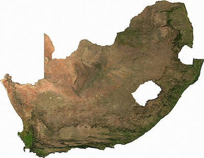

Lwazi Lubisi
About Me
My name is Lwazi Lubisi and most people know me as Paco. I was born in South Africa currently live in South Africa in the West Rand of Gauteng, in Krugersdorp. I currently work as a merchandiser under a company called Smollan. I don't have any children and still reside with my parents and my sister who are very supportive of my studies and my progress in life. They mean more than everything to me. I love playing video games and hanging out with my friends during my free time.

Krugersdorp, South Africa

South Africa is a country on the southernmost tip of the African continent, marked by several distinct ecosystems. Inland safari destination Kruger National Park is populated by big game. The Western Cape offers beaches, lush winelands around Stellenbosch and Paarl, craggy cliffs at the Cape of Good Hope, forest and lagoons along the Garden Route, and the city of Cape Town, beneath flat-topped Table Mountain.